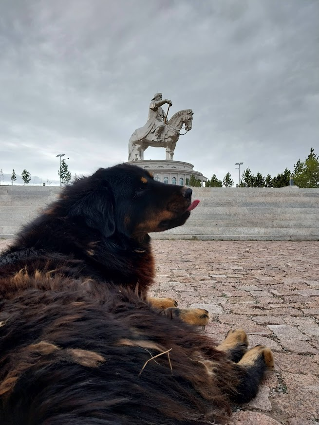
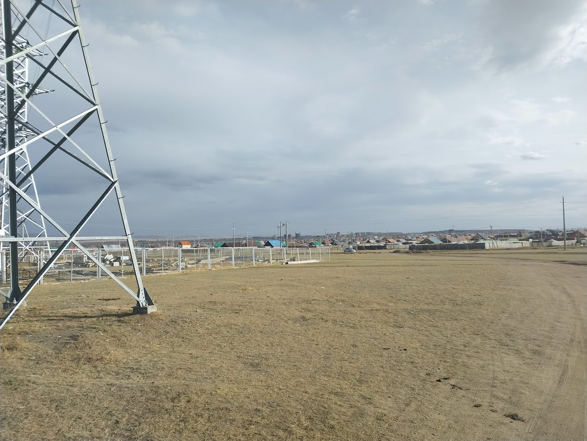

Baganuur is about 2-3 hours away from the capital city of Ulaanbaatar. You can either drive yourself, get a taxi, or take the bus to get there.

On your way to Baganuur, you will drive by the Genghis Khaan statue, which is one of the famous tourist attractions of Mongolia. You are able to enter and go up on the horse.

Baganuur is not very big when it comes to the town size. It only takes 45 minutes to walk from corner to corner. Baganuur is known for its coal mining industry, so this is where a large amount of Mongolia's coal comes from.